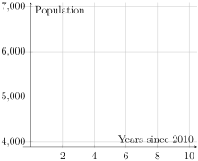

We have seen that when a quantity increases or decreases by the same amount for each additional unit of the input variable, the value of the output variable can be modeled as a linear model. That is, linear models have a constant average rate of change. For example, think of getting a $500 raise every year.
When a quantity increases or decreases by the same percentage for each additional unit of the input variable, the value of the output variable can be modeled as an exponential model. Exponential models have a constant relative change. For example, think of getting a 3% raise every year.
Activity3.3.1.
We looked at the populations of three small towns in the Prep Activities. All three towns had a population of 5500 in 2010, but their populations were changing in different ways:
Indiana: Increasing by 2.5% each year
Ohio: Decreasing by 2.5% each year
Michigan: Decreasing by 150 people each year
(a)
Determine which town’s population has a linear model. Explain your answer, and find a formula for the population \(P\) of this town \(t\) years after 2010.
(b)
The populations of the other two towns have an exponential model. Explain how we know this from the verbal description of the change in the towns’ populations.
(c)
In the Prep Activity, you found the populations of all three towns in 2011, 2012, 2013, and 2020. Plot the populations of all three towns on the graph below. What do you notice?

Blank axes. The horizontal axis is labeled with the years between 0 and 10. The vertical axis goes from 3900 to 7100.
Figure3.3.1.Populations of Three Small Towns
(d)
You learned in the Prep Activity that the math expressions \(5500 + 5500(0.025)\) and \(5500 \times 1.025\) are equivalent. Use this idea to rewrite your work for finding the populations of the two towns with exponential models. What pattern do you see? Find formulas for the populations of the two towns with exponential models.
Activity3.3.2.
(a)
List at least two other situations where quantities, besides population, can have constant relative change and be represented with an exponential model, and explain your reasoning.
(b)
Create an algebraic formula that represents the changing values over time for each of your examples.
(c)
What is "exponential" about these exponential models?
Activity3.3.3.
Suppose that the cost of attending a certain four-year private college (tuition and fees) was $16,500 in 1977 and that the cost increased about 3.2% every year.
(a)
Create an algebraic model, or formula, that could be used to estimate the cost of attending this college over time.
(b)
According to your model, what would be the tuition and fees for 1987, 1997, and 2022? Round your answers to the nearest dollar.
(c)
How many years from 1977 did it take for the total cost of tuition and fees to double? To triple?
(d)
If the original cost of attending the college in 1977 was only $12,000, how would the doubling and tripling time change?
(e)
Explain one strategy you could use to determine the year when this model would predict a cost of $42,000. Assume we are using the original cost of $16,500 for 1977.
Activity3.3.4.
The rate of elimination of caffeine from the human body varies greatly from individual to individual. Suppose that Jacob drinks a 16-ounce coffee drink that contains about 310 mg of caffeine. His body eliminates about 13% of the caffeine every hour. Hint: Assume all caffeine is absorbed into the body as soon as the coffee is drunk.
(a)
Create an algebraic model for this situation. Let \(t\) be the number of hours after drinking a 16-oz cup of coffee, and let \(A\) be the amount of caffeine in your body.
(b)
How much caffeine would be in Jacob’s body right after he drank a second 16-ounce coffee drink, exactly three hours after drinking the first one?
(c)
Approximately how long will it take for Jacob’s body to eliminate half of the caffeine from one 16-ounce coffee drink?
(i)
Try to use algebra to answer this question! What happens?
(ii)
Use a graphing utility to create a precise graphical model of the amount of caffeine in Jacob’s body from one 16-ounce coffee drink. Use your graph to answer the question. Include a sketch of your graph and the steps you used to find the answer here.
(d)
If Jacob drank a 12-ounce Pepsi containing 38 mg of caffeine instead of the coffee drink, how long will it take for Jacob’s body to eliminate half of the caffeine? Write your answer rounded to the nearest whole hour.
Activity3.3.5.
(a)
Shawn’s brand new Dodge Charger valued at $52,250 depreciates at the rate of 8% per year. He plans to sell it in 5 years. How much will it be worth then?
(b)
Fletcher currently exercises for about an hour per week. They’d like to exercise for the recommended 150 minutes per week. They know that they’re more likely to sustain the change if they slowly increase the amount they’re exercising each week instead of trying to jump from one hour to 150 minutes. If Fletcher increases how much they exercise by 20 minutes each week, how many weeks will it take them to get to their goal of 150 minutes per week?
(c)
Melany’s starting salary is $55,000, and she will be getting a 2% pay raise every year. How many years will it take for her salary to be $60,000?
(d)
Joan quit her job at GM when she was 35 years old. Her friend, who is a financial advisor, recommended that she leave her 401(k) retirement savings in GM’s retirement plan rather than withdrawing or transferring the money to a new plan. Her friend said that, on average, Joan could expect a 6% increase per year if she left her money in the plan for many years, based on the past performance of GM’s plan. Joan will not be able to add more money to the GM 401(k) account, but can open a new one at her new job. How long will it take for the amount of money Joan has in the GM 401(k) to double?
Activity3.3.6.
The half-life of a substance with an exponential model is the amount of time it takes for half of the substance to be eliminated. For example, the half-life of a drug in the blood in the amount of time it takes for half of the drug to be elminiated from the body, and the half-life of a radioactive element is the amount of time it takes for half of the starting amount to decay.
(a)
If the half-life of a certain drug is 3 hours, and 25 mg of the drug is in the blood at 5 pm, how much of the drug will be in the blood at 8 pm? How long will it take for there to be 6.25 mg of the drug left in the blood?
(b)
Earlier, we assumed that the body could eliminate 13% of the caffeine present every hour. Wikipedia states that the half-life of caffeine in a healthy adult is often between 4.9 and 6 hours. 1
If 13% of the caffeine is eliminated every hour, does this imply a half-life between 4.9 and 6 hours? Explain.
(c)
The antibiotic tetracycline is used for treatment against many different bacterial infections. Suppose that an individual is given 300 mg of tetracycline per dose, and the half-life of tetracycline is 8 hours. Assume all tetracycline is absorbed into the body immediately.
(i)
Use that the half-life of tetracycline is 8 hours to fill in the table below.
Table3.3.2.Amount of Tetracycline in the Body
Hours Since Dose
Number of 8 Hours Periods, \(x\)
Amount of Tetracycline (mg), \(A\)
0
0
300
8
1
16
24
48
(ii)
Find an algebraic formula for \(A\text{,}\) the amount of tetracycline in the body, after \(x\) 8-hour periods.
(iii)
It would be more convenient to have a formula for \(A\text{,}\) the amount of tetracycline in the body, after \(t\) hours! If it has been \(t\) hours, how many 8-hour periods has it been? Use your observation to rewrite your formula for \(A\) in terms of \(t\) instead of \(x\text{.}\)
(iv)
Suppose that Reese is given a 300-mg tetracycline does every 6-hrs. How much tetracycline does he have left in his body just before his second dose?